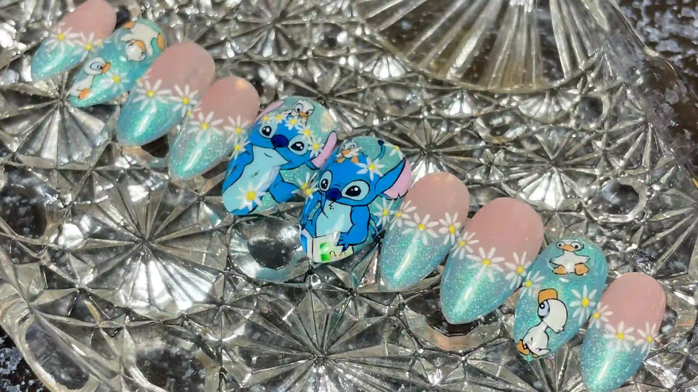
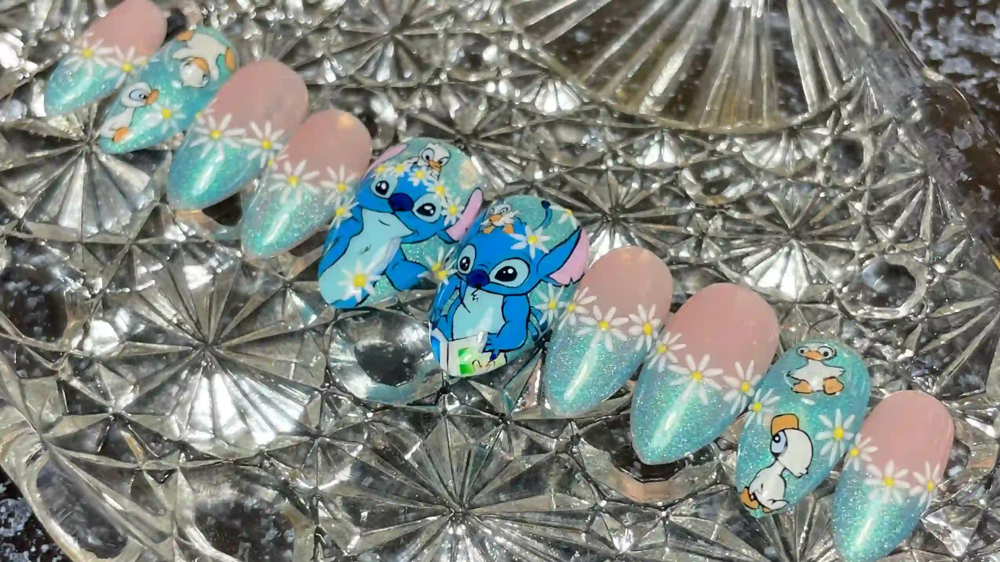

The Meaning
In Mexico, there is a saying of "La Mera Mera" which means the boss, highest-ranking, or skilled woman in a group or field. This saying is common praise to a person that is appreciated for their work.
My maiden last name is Mera. A name that traveled from Tula, Hidalgo, Mexico to Phoenix, Arizona. Knowning the phrase, I decided to use my maiden name as the center of my nail business.

The Inspiration
Like any other girl, I always enjoyed painting my nails. It wasn't until my mom went to nail school that I enjoyed it more. She learned and became a talented tech. I found her work beautiful and wanted to be like her. I started to practice and in high school, I got the opportunity to start cosmetology for my last 2 years of school. I graduated and my love for nails grew more.
What are Hand-made Press-Ons?
Press-on nails are pre-made luxury nails that can be worn for a few days or weeks and be replaced without going to a nail salon. These nails are made with high quality cover tips and products. The best part of ordering custom is having the ability to choose every detail.